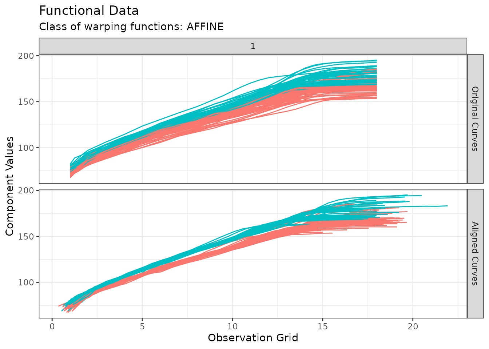
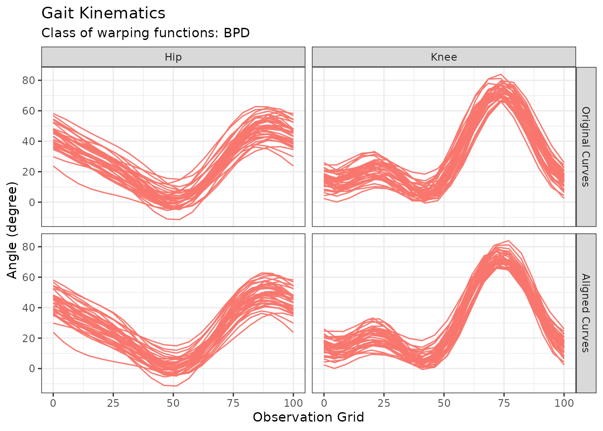

library(fdacluster)
#> Error in get(paste0(generic, ".", class), envir = get_method_env()) :
#> object 'type_sum.accel' not found
library(ggplot2)We shall recall that fdacluster handles only functional data on univariate domains. This is because alignment (a.k.a. registration) of curves defined on multivariate domains is much more complex. The codomain of the functional data can however very well be multivariate. Throughout this article, we will consistently denote:
- by the number of curves in the sample, which is the sample size;
- by the size of the grids on which the curves have been evaluated;
- by the dimension of the codomain of the curves.
Native format
The native format in fdacluster
consists in a pair of vector/matrix x and matrix/array
y respectively storing the evaluation grids and the values
of the curves on these grids.
Passing evaluation grids through the x argument
If all curves have been evaluated on the exact same grid, then
x can be either a numeric vector of size
or a numeric matrix of size
,
in which case all rows should be identical.
It is however possible that, despite having a common grid
size, curves have actually been evaluated on different grids. In
this case, x should be a matrix of size
.
Passing curve values through the y argument
If the curves evaluate on a univariate codomain, then y
can be either a numeric matrix of size
or a numeric array of size
. In both cases, it stores
individual curves in rows and their value on the corresponding grid
point in either the second dimension if y is a matrix or
the third dimension if y is an array.
It is however possible that curves evaluate on a multivariate
codomain of dimension
In this case, y should be an array of size
.
Parsers for standard functional R objects
The reason for such a choice of native format is computation
efficiency. However, the R landscape of
functional data analysis is very rich. This has led us to make fdacluster
compatible with other standard ways of storing functional data in R.
Specifically, we added support for the fd class from the fda
package and for the funData and multiFunData
classes from the funData
package.
Support for funData
The funData package is a package designed for the sole purpose to implement classes for storing all kinds of functional data. Functional data have a domain and a codomain, both of which can be univariate or multivariate. In addition, each function in the data sample might have been observed on a different grid. This has led the authors of the funData package to propose three different classes, namely (Happ-Kurz 2020):
- Class
funDatafor dense functional data of arbitrary dimension (in most cases the dimension of the domain is ) on a common set of observation points for all curves. The curves may have missing values coded byNA.- Class
irregFunDatafor irregularly sampled functional data with individual sampling points , , for all curves. The number and the location of observation points can vary across individual observations. At the moment, only data on one-dimensional domains is implemented.- Class
multiFunDatafor multivariate functional data, which combines elements of functional data that may be defined on different dimensional domains (e.g., functions and images).
The fdacluster
package focuses on functional data defined on uni-dimensional domains
with possibly multivariate codomains and possibly different evaluation
grids per curve. As such, support for all three classes is needed. This
is achieved by the utility function format_inputs() which
can read in classes from the funData
package when provided as x argument with no y
argument. Specifically, the following code shows how classes from the funData
package are transformed into the (x, y) matrix / array
format:
if (inherits(x, "funData")) {
if (length(x@argvals) > 1)
cli::cli_abort(c(
"The {.pkg fdacluster} package does not support functional data defined ",
"on multivariate domains."
))
L <- 1
y <- x@X
dims <- dim(y)
N <- dims[1]
M <- dims[2]
y <- array(y, dim = c(N, L, M))
x <- x@argvals[[1]]
} else if (inherits(x, "irregFunData")) {
L <- 1
N <- length(x@argvals)
M <- x@argvals |>
purrr::map_int(length) |>
mean() |>
round()
y <- array(dim = c(N, L, M))
y[, 1, ] <- x@X |>
purrr::imap(\(values, id) approx(x@argvals[[id]], values, n = M)$y) |>
do.call(rbind, args = _)
x <- x@argvals |>
purrr::map(\(grid) seq(min(grid), max(grid), length.out = M)) |>
do.call(rbind, args = _)
} else if (inherits(x, "multiFunData")) {
L <- length(x)
dims <- dim(x[[1]]@X)
grid <- x[[1]]@argvals[[1]]
purrr::walk(x, \(fData) {
if (length(fData@argvals) != 1)
cli::cli_abort(c(
"The {.pkg fdacluster} package does not support functional data ",
"defined on multivariate domains."
))
if (any(fData@argvals[[1]] != grids))
cli::cli_abort(c(
"All components of the {.cls multiFunData} object must share the same ",
"evaluation grids."
))
if (any(dim(fData@X) != dims))
cli::cli_abort(c(
"All components of the {.cls multiFunData} object must have values ",
"stored in matrices with the same dimensions."
))
})
N <- dims[1]
M <- dims[2]
y <- array(dim = c(N, L, M))
for (l in 1:L) y[, l, ] <- x[[l]]@X
x <- grid
} else
cli::cli_abort(c(
"Functional data provided in a single argument {.arg x} must be either of ",
"class {.cls funData} or of class {.cls irregFunData} or of class ",
"{.cls multiFunData}."
))Example for funData support: Growth Data
The following lines of code demonstrates how clustering functions in
fdacluster
handle objects of class funData using the Berkeley growth
data study developed in Silverman and Ramsay
(2002).
growth <- fda::growth
growthData <- funData::funData(
argvals = growth$age,
X = t(cbind(growth$hgtm, growth$hgtf))
)
out_growth <- fdakmeans(
x = growthData,
n_clusters = 2,
seeding_strategy = "exhaustive-kmeans++",
cluster_on_phase = TRUE,
use_verbose = FALSE
)
plot(out_growth)
Example for irregFunData support: Simulated Data
The following lines of code demonstrates how clustering functions in
fdacluster
handle objects of class irregFunData using in-house
simulated data on the fly.
# Generates full grid
argvals <- seq(0, 2 * pi, by = 0.01)
# Simulate 30 irregular grids with various sampling points (number and values)
indices <- replicate(30, sort(sample(1:length(argvals), sample(30:50, 1))))
argvalsIrreg <- lapply(indices, \(i) argvals[i])
# Simulate functional data with obvious grouping structure
withr::with_seed(1234, {
simData <- funData::irregFunData(
argvals = argvalsIrreg,
X = mapply(
function(x, a, b) a * sin(x + b),
x = argvalsIrreg,
a = c(rgamma(10, 25, 50), rgamma(10, 50, 50), rgamma(10, 100, 50)),
b = c(rnorm(10, -1, 0.1), rnorm(10, 0, 0.1), rnorm(10, 1, 0.1))
)
)
})
out_sim <- fdakmeans(
x = simData,
n_clusters = 3,
seeding_strategy = "exhaustive-kmeans++",
use_verbose = FALSE
)
plot(out_sim)Example for multiFunData support: Gait Data
The following lines of code demonstrates how clustering functions in
fdacluster
handle objects of class multiFunData using the gait data
study developed in Silverman and Ramsay
(2002).
cycle_perc <- (0:19) / 19 * 100
hipData <- t(fda::gait[, , 1])
hipData <- hipData
kneeData <- t(fda::gait[, , 2])
kneeData <- kneeData
gaitData <- funData::multiFunData(
funData::funData(argvals = cycle_perc, X = hipData),
funData::funData(argvals = cycle_perc, X = kneeData)
)
out_gait <- fdakmeans(
x = gaitData,
n_clusters = 1,
seeding_strategy = "exhaustive",
warping_class = "srsf",
use_verbose = FALSE
)Support for fda
The fda
package features the class fd as a hosting R
structure for functional data. In this representation, functional data
are decomposed on a number of basis functions (Ramsay and Silverman 2006). The class is then a
list with the following 3 components:
-
coefs: Stores the coefficients of each functional datum in the sample corresponding to its expansion along the basis functions; -
basis: Stores the basis functions; -
fdnames: Stores IDs for each coefficient, each observation and each dimension of the co-domain.
Basis functions supported by the fda
package are exclusively defined on univariate domains. As such, the
class fd only handles functional data on unidimensional
domains. However, it accommodates functional data evaluating on
multidimensional co-domain. This is achieved by using a
three-dimensional array for the coefficients instead of a vector or a
matrix. Indeed, quoting the help page of the fd class:
coef: A vector, matrix, or three-dimensional array of coefficients. The first dimension (or elements of a vector) corresponds to basis functions. A second dimension corresponds to the number of functional observations, curves or replicates. Ifcoefis a vector, it represents only a single functional observation. Ifcoefis an array, the third dimension corresponds to variables for multivariate functional data objects. A functional data object is univariate ifcoefis a vector or matrix and multivariate if it is a three-dimensional array.
Consequently, the fdacluster
package handles objects of class fd by considering that
x, as in native format, stores the unidimensional grids and
y is an object of class fd. It then parses the
data in the following way:
dims <- purrr::map_int(y$fdnames, length)
M <- dims[1]
N <- dims[2]
L <- dims[3]
if (is.vector(x)) {
if (length(x) != M)
cli::cli_abort(c(
"The number of function evaluations ({M}) does not match the grid ",
"size ({length(x)})."
))
y <- fda::eval.fd(x, y)
} else {
if (nrow(x) != N)
cli::cli_abort(c(
"When provided multiple evaluation grids as a matrix, the number of ",
"rows should match the number of curves."
))
if (ncol(x) != M)
cli::cli_abort(c(
"When provided multiple evaluation grids as a matrix, the number of ",
"columns should match the common grid size."
))
y <- fda::eval.fd(t(x), y)
}
if (is.null(dim(y))) {
# y is a single 1-dimensional curve
y <- array(y, dim = c(length(y), 1, 1))
} else if (length(dim(y)) == 2) {
# y is N 1-dimensional curves
y <- array(y, dim = c(dim(y), 1))
}
y <- aperm(y, c(2, 3, 1))Example for fd support: Gait Data
The following lines of code demonstrates how clustering functions in
fdacluster
handle objects of class fd using the gait data study
developed in Silverman and Ramsay
(2002).
bspl <- fda::create.fourier.basis(rangeval = c(0, 100), nbasis = 5)
gaitDataFD <- fda::smooth.basis(
argvals = cycle_perc,
y = fda::gait,
fdParobj = bspl
)$fd
out_gait_fd <- fdakmeans(
x = cycle_perc,
y = gaitDataFD,
n_clusters = 1,
seeding_strategy = "exhaustive",
warping_class = "srsf",
use_verbose = FALSE
)
p <- autoplot(out_gait_fd)
p$data$component_id <- factor(p$data$component_id, labels = c("Hip", "Knee"))
p + labs(y = "Angle (degree)", title = "Gait Kinematics")